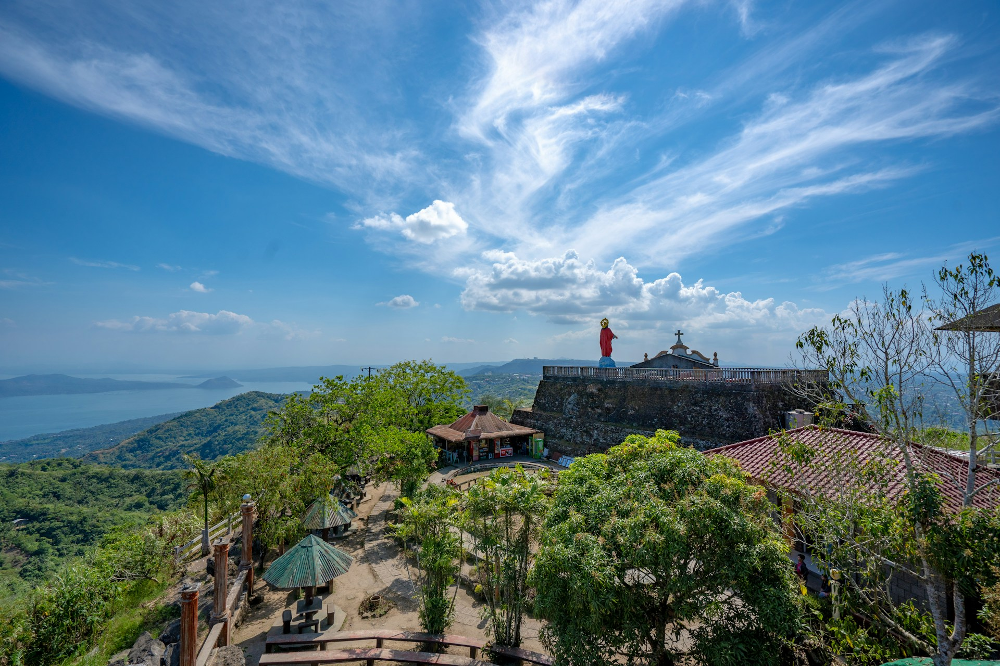
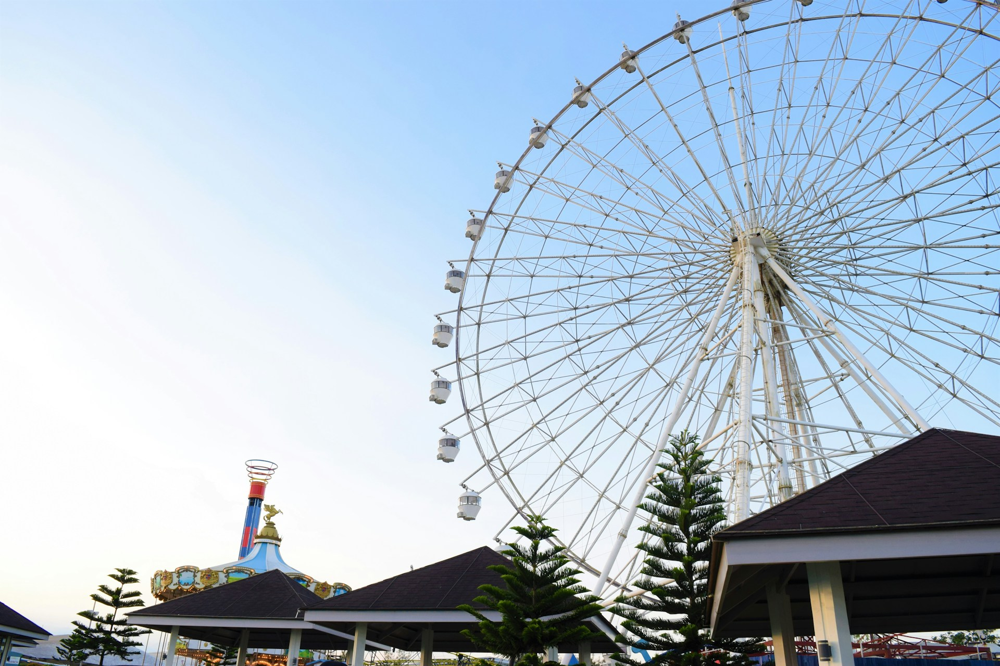

Table with Images (Favorite Place)

Location
Tagaytay City is located in the province of Cavite, within the CALABARZON region (Region IV-A) of the Philippines. A key reference point is the Tagaytay City Hall, situated along Akle Road in Kaybagal South, Tagaytay City. Perched on a ridge, the city offers breathtaking panoramic views and is easily accessible from Metro Manila, making it a popular weekend destination for tourists and locals alike.

History
Tagaytay became a chartered city on June 21, 1938, through Commonwealth Act No. 338, which was signed by President Manuel L. Quezon and authored by Representative Justiniano Montano. The city was formed from areas that originally belonged to the municipalities of Silang, Mendez, Indang, and Amadeo. Tagaytay is renowned for its cool climate and spectacular views of Taal Volcano and Taal Lake, one of the smallest active volcanoes in the world, which has made it a beloved retreat for generations of Filipinos.

Why It's My Favorite Place
Tagaytay has been a very special place for me because it has been my family's go to place whenever we go out of town. The cold air embraces you like its an old friend you're visiting again whenever you come back. Food bringing you comfort and a hot tummy to fend off the chilly wind. And your family having fun every time you visit the place. It's a like a sanctuary for the ever busy world we are trying to navigate.
Tagaytay City remains one of the my most treasured destinations, offering a perfect blend of natural beauty, rich history, and a sanctuary that continues to captivate me year after year.